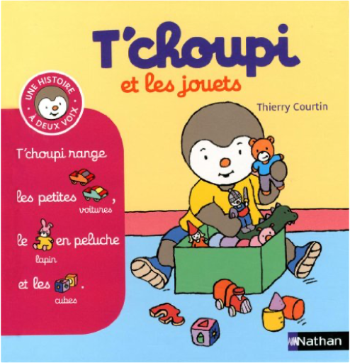
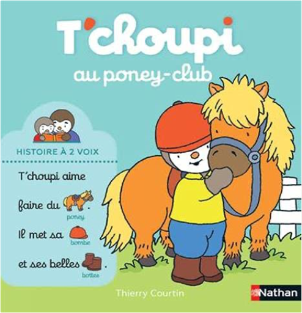

Books
Movies
Albums
Videogames
Games
BD
BD Camille
Blu-ray
Business
Camille
Comics
Cooking
Lego
Manga
Pauline
Photography
Star Wars
T'choupi
Travel
TV Shows
Un livre dont vous êtes le héro
Vinyl
Walt Disney
15
16
17
18
19

t'choupi, à deux voix, tome 14 : et les jouets
thierry courtin
t'choupi, à deux voix, tome 15 : et la cuisine
thierry courtin
t'choupi, à deux voix, tome 16 : et le père noël
thierry courtin
t'choupi, à deux voix, tome 17 : a de nouveaux habits
thierry courtin
t'choupi, à deux voix, tome 18 : et les bébés animaux
thierry courtin
t'choupi, à deux voix, tome 19 : prend soin de la planète
thierry courtin

t'choupi, à deux voix, tome 20 : au poney club
thierry courtin
t'choupi, tome 1 : veut un chaton
thierry courtin
t'choupi, tome 2 : ne veut pas prêter
thierry courtin
t'choupi, tome 3 : n'a plus sommeil
thierry courtin
t'choupi, tome 4 : jardine
thierry courtin
T'Choupi Jardine
t'choupi, tome 5 : fait du vélo
thierry courtin
15
16
17
18
19


 Made with Delicious Library Made with Delicious Library
Made with Delicious Library Made with Delicious Library